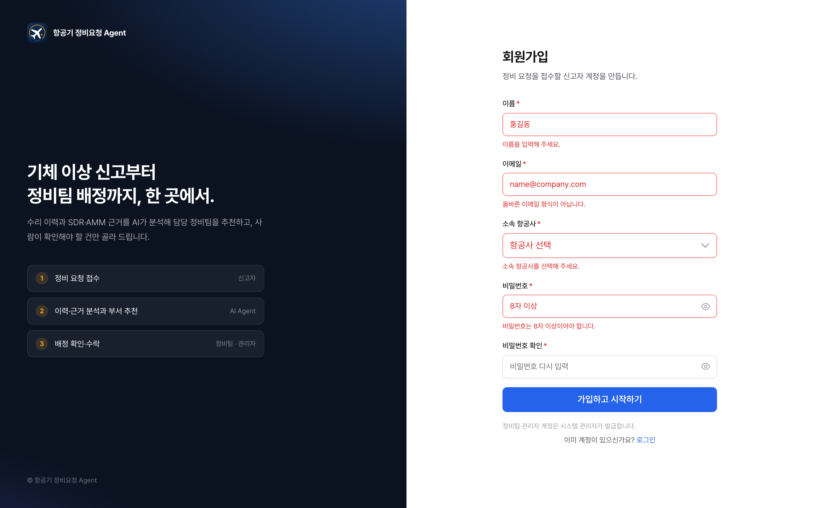
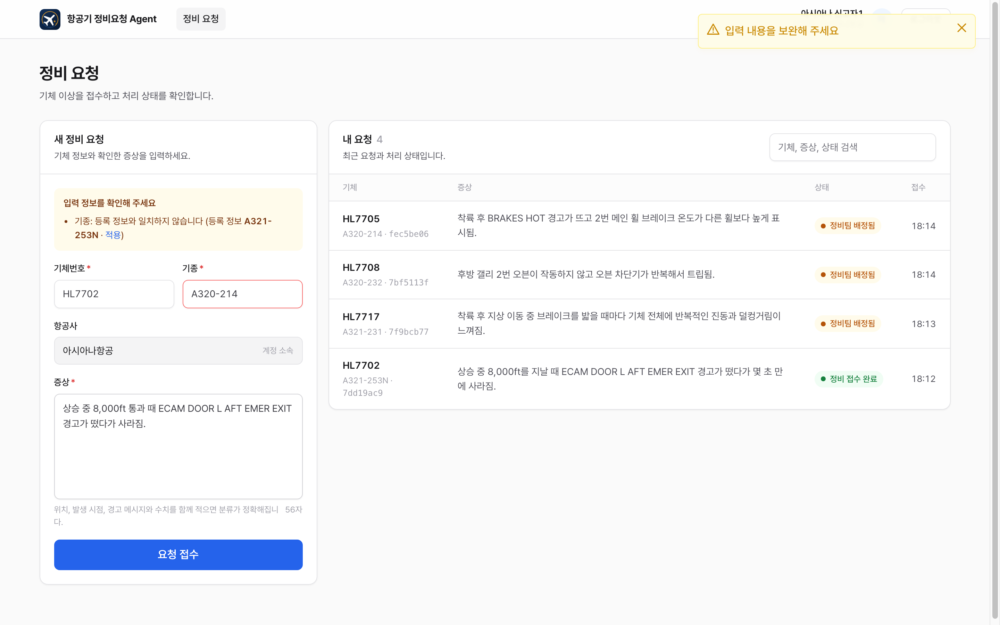
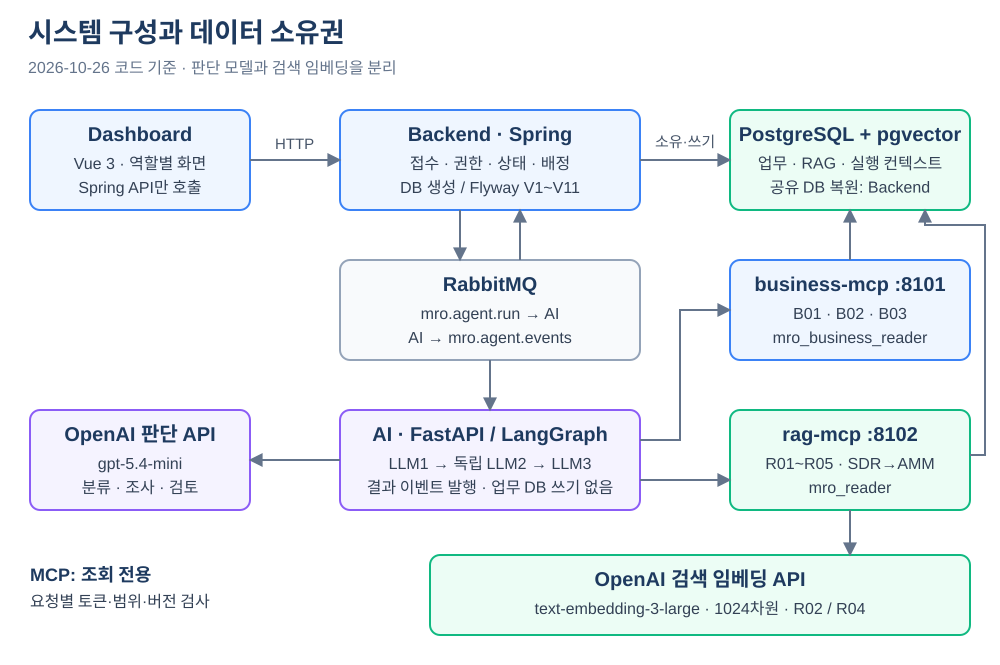
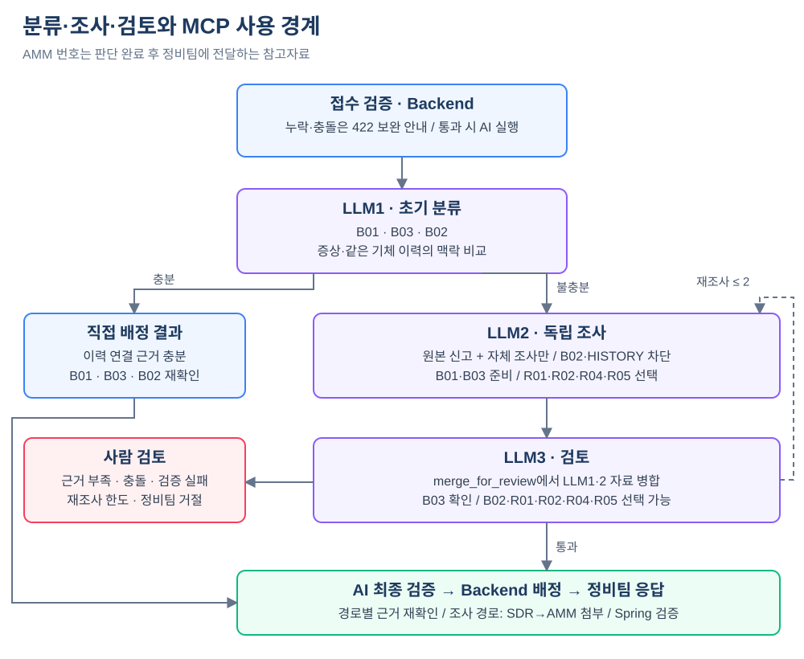
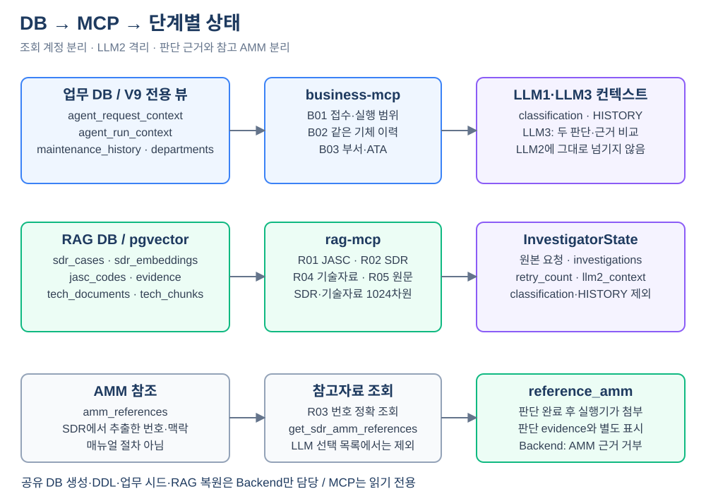
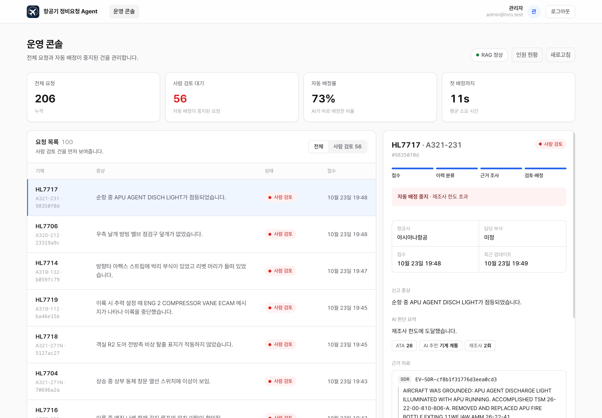
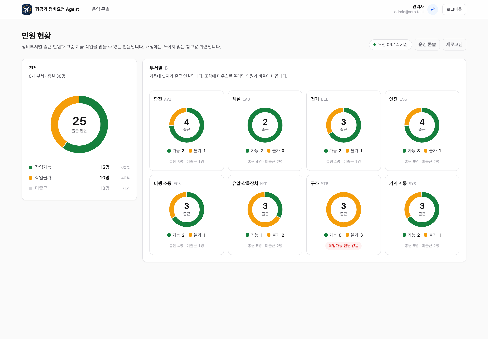
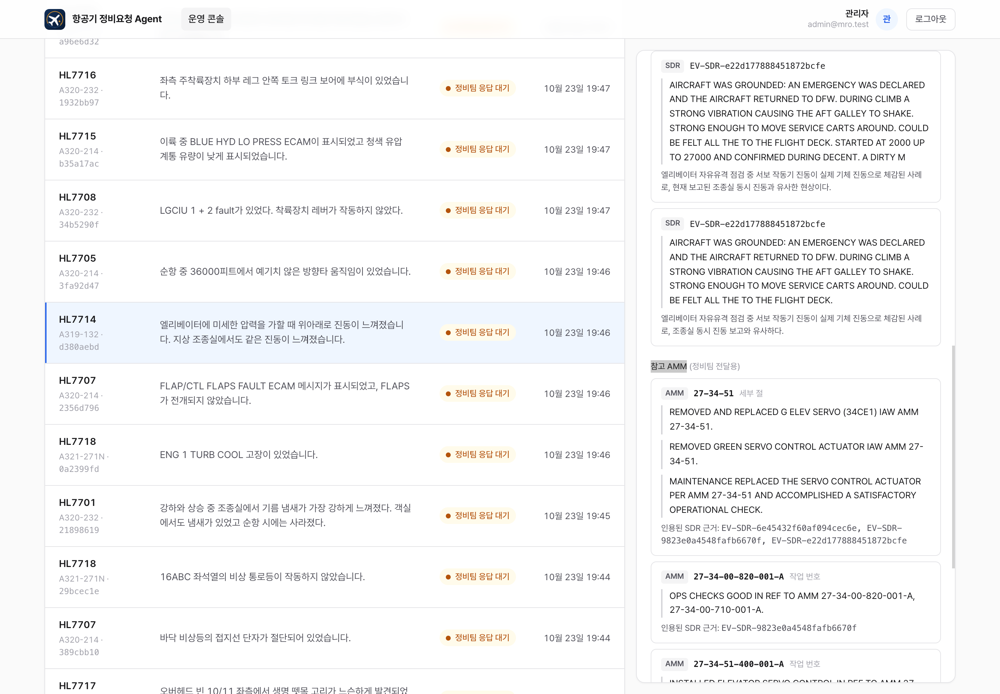
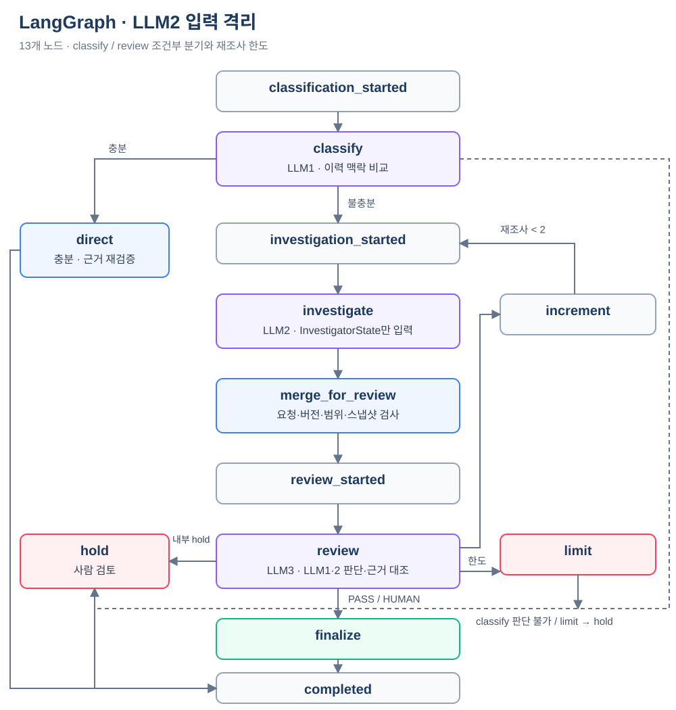

| 소속 | 4기 판교 1반 |
|---|---|
| 팀 | 항공기 정비요청 Agent 팀 |
| 팀원 | 유영호 · 최세환 · 김유빈 · 곽나현 · 이주영 · 김경 |
| 작성일 | 2026-10-21 · 개정 2026-10-26 |
| 검토 기준 | 코드 10/26 · 서비스 평가 10/23 |
항공사 정비통제실에는 운항 중이나 지상에서 발견한 결함 신고가 계속 들어온다. 신고는 "상승 중 객실에서 퀴퀴한 냄새가 남"처럼 자연어로 들어오고, 어느 정비 부서가 맡을지는 통제 담당자가 경험으로 판단한다.
신고가 들어오면 같은 기체의 수리이력과 유사 결함 사례(SDR)를 근거로 담당 부서를 정하고, 근거와 함께 배정한다. 근거가 부족하거나 판단이 엇갈리면 자동 배정을 멈추고 사람 검토로 넘긴다.
| 구분 | 내용 |
|---|---|
| 대상 기종 | Airbus A320 계열 (목업 기체 20대, 항공사 3곳: KAL·AAR·JNA) |
| 배정 단위 | 정비 부서 8개: AVI 항전, ELE 전기, ENG 엔진, HYD 유압·착륙장치, SYS 기계 계통, STR 구조, CAB 객실, FCS 비행 조종 |
| 범위 안 | 신고자 회원가입·로그인, 신고 접수와 보완 안내, 초기 분류, 근거 조사, 검토·배정, 정비팀 수락·거절, 사람 검토, 역할별 대시보드, 관리자 인원 현황 조회 |
| 범위 밖 | 실제 정비 절차 지시, 운항 가능 여부 판단, 정비팀 거절 후 자동 재배정 |
대상은 항공사 정비본부와 MRO(정비 위탁) 업체의 정비통제 조직이다(B2B).
| 가치 | 내용 |
|---|---|
| 배정 시간 단축 | 반복 결함은 접수 단계에서 같은 기체 이력과 바로 연결해 조사 없이 배정한다. |
| 근거가 남는 배정 | 배정에는 수리이력 또는 SDR 근거 ID와 원문 일부가 남는다. 근거 SDR에서 AMM 참조가 확인되면 참고번호와 맥락을 별도로 첨부한다. |
| 책임 범위 구분 | 근거가 맞지 않거나 판단이 엇갈리는 건은 이유와 함께 사람에게 넘겨 자동화 범위를 통제한다. |
| 확장성 | 부서·ATA 매핑과 RAG 데이터는 버전 단위로 바꿀 수 있어 다른 기종·조직에도 같은 구조를 쓸 수 있다. |
서비스 평가 200건 (2026-10-23, 실제 gpt-5.4-mini · HTTP MCP · RabbitMQ · Docker Postgres). 수치는 기존 실행 자료를 재집계한 것이며 이번 문서 개정 중 새 평가를 실행하지 않았다.
이 평가는 서비스 연결과 판단 결과를 함께 확인했다. LLM2·3 경로의 자동배정 29건은 모두 팀 채점 기준을 통과했지만, LLM1 직접 배정에는 실패 49건이 남았다. 자동화의 효과와 함께 직접 배정의 근거 검증을 보강해야 할 지점이 확인됐다.

| 구성 요소 | 포트 | 기술 | 역할 |
|---|---|---|---|
| 프론트엔드 | 5173 | Vue 3.5, TypeScript, Vite 7, PrimeVue 4 | 신고자·정비팀·어드민 화면과 회원가입. Spring API만 호출 |
| Backend | 8080 | Spring Boot 3.5, Java 21, Flyway | 인증·권한, 접수 확인, 상태 관리, 근거 검증과 배정 실행, 실행별 검색 범위와 MCP 위임 토큰 발급 |
| RabbitMQ | 5672 | RabbitMQ 4.1 | 실행 요청·결과 이벤트 전달, 실패 메시지 DLQ |
| AI 서버 | 8100 | Python 3.12, FastAPI, LangGraph | 큐에서 실행 요청을 받아 LLM1~3 실행, MCP 도구 호출, 결과 이벤트 발행 |
| business-mcp | 8101 | FastMCP | 접수 내용, 기체 수리이력, 부서 후보 조회 (B01~B03) |
| rag-mcp | 8102 | FastMCP, pgvector, OpenAI 임베딩 API | JASC·SDR·AMM·기술자료 검색, 근거 확인, SDR의 AMM 참고번호 조회 |
| PostgreSQL | 5432 | PostgreSQL 16 + pgvector 0.8.2 | 업무 데이터, RAG 데이터와 임베딩, 실행별 검색 범위 |
| LLM | - | OpenAI gpt-5.4-mini | 분류·조사·검토 판단과 다음 도구 선택 |

| 상태 | 의미 | 다음 상태 |
|---|---|---|
QUEUED | 접수 확인 통과, 실행 요청 발행 | 진행 중 상태끼리(QUEUED 제외), ASSIGNED, HUMAN_REVIEW |
CLASSIFYING | LLM1 초기 분류 중 | |
INVESTIGATING | LLM2 조사 중 | |
REVIEWING | LLM3 검토 중 | |
ASSIGNED | 부서 배정, 정비팀 응답 대기 | ACCEPTED, HUMAN_REVIEW |
HUMAN_REVIEW | 사람 검토 대기, 자동 배정 중지 | ASSIGNED, CLOSED |
ACCEPTED · CLOSED | 정비팀 수락 · 어드민 종결 | 종료 |
상태는 Spring의 RequestWorkflow로만 바뀌고, 허용되지 않은 전이는 409(INVALID_STATE)로 막는다. 사람 검토 사유: AGENT_NEEDS_HUMAN, RETRY_LIMIT, TEAM_REJECTED, VALIDATION_FAILED, SYSTEM_ERROR.
요청 하나를 처리하는 동안 노드들이 함께 쓰는 상태(GraphState)를 두고, 노드는 상태를 읽어 바뀐 필드만 돌려준다. 출력은 Pydantic 스키마로 검사하고, 형식 오류는 오류 내용을 알려 1회 다시 받는다. NextStep의 사용하지 않는 선택 필드 등 의미가 같은 빈 값은 정규화한다. LLM2는 공유 상태 전체가 아닌 InvestigatorState만 받는다.
| 필드 | 타입 | 채우는 곳과 의미 |
|---|---|---|
request_id 외 4개 | str | 실행 요청 메시지. 요청 ID, 등록부호, 정확한 모델, 항공사, 증상 |
classification | Classification | None | LLM1. ATA 2자리, 연결한 수리이력 ID, 충분 여부, 제안 부서(충분일 때 필수), 이유 |
investigations | list[Investigation] | LLM2. 재조사마다 쌓임. ATA, 추정 결함, 심각도(LOW·MEDIUM·HIGH·AOG), 근거(1개 이상), 제안 부서 |
reviews | list[Review] | LLM3. 결정(PASS·SUPPLEMENT·HUMAN), 부서(PASS일 때 필수), 의견, 보완 요청(SUPPLEMENT일 때 필수) |
llm2_context | dict[str, Any] (선택) | LLM2 전용 도구 컨텍스트. 원본 요청과 자체 검색 결과만 유지하며 classification·HISTORY·검토 자유문장은 전달하지 않음 |
retry_count | int | 라우팅. SUPPLEMENT로 LLM2에 되돌아간 횟수 |
근거(Evidence)는 출처, 근거 ID, 원문 일부(300자 이내), 사용 이유로 구성한다. Evidence.source는 HISTORY·SDR·AMM이다. LLM2는 HISTORY를 사용할 수 없고 AMM은 LLM2·3 판단 근거에서 제외한다. 기술자료는 별도의 TECHNICAL_DOC 조회 기록과 technical_basis_ids로 추적하며, 결론에 필수이면 적용성 확인을 위해 보류한다.
| 분기 조건 | 다음 |
|---|---|
classification.sufficient == True | 바로 배정 결과 |
classification.sufficient == False | LLM2 조사·판정 → LLM3 검토 |
review.decision == "PASS" | 근거 재확인 → 배정 결과 |
"SUPPLEMENT", retry_count < 2 | LLM2 독립 재조사 (자체 조사 결과와 일반 재점검 지시만 전달) |
"SUPPLEMENT", retry_count >= 2 | 사람 검토 (RETRY_LIMIT) |
"HUMAN" | finalize에서 사람 검토 결과 구성 (AGENT_NEEDS_HUMAN) |
| 내부 hold 있음 | hold에서 사람 검토 결과 구성 |
Agentic 요소는 네 가지다. LLM2·LLM3가 매 단계 다음 행동(도구 호출·마무리·보류)과 도구를 스스로 고른다. LLM3가 두 판단의 근거·계통·부서와 기종 적용성을 대조한다. 재조사는 LLM1 결론이나 LLM3의 구체적 보완 문장을 LLM2에 노출하지 않도록 분리한다. 판정에는 도구 결과에 실제로 있던 근거만 쓴다. 근거가 맞지 않거나 한도를 넘으면 이유 코드와 함께 스스로 멈추고 사람에게 넘긴다.

| 영역 | 선택 | 근거 |
|---|---|---|
| Backend | Spring Boot 3.5, Spring Security(JWT), JPA, Flyway | 권한, 상태 전이, 배정 같은 업무 규칙을 한 곳에 모은다. 스키마는 Flyway 이력(V1~V11)으로만 바꾼다. |
| AI 서버 | FastAPI, LangGraph, LangChain MCP 어댑터 | 분기와 반복이 있는 흐름을 그래프로 표현하고, 요청 단위로 상태를 체크포인트에 저장한다. |
| 서버 간 통신 | RabbitMQ 4.1 + DLQ | LLM 처리는 수 초~수십 초가 걸려 HTTP 동기 호출 대신 큐로 분리했다. |
| MCP | FastMCP 서버 2개, streamable HTTP | 업무 조회와 근거 검색을 표준 도구로 노출하고, 인증·응답 형식·읽기 전용 DB를 공통 기반으로 쓴다. |
| DB | PostgreSQL 16 + pgvector | 업무 데이터와 벡터 검색을 DB 하나에서 스키마와 조회 계정으로 나눠 운영한다. |
| 임베딩 | text-embedding-3-large (1024차원) | R02 SDR·R04 기술자료 검색에 사용한다. 질의 임베딩은 OpenAI API를 호출하며 비용·지연이 발생한다. 현재 런타임에는 PyTorch·로컬 모델이 없다. 이전 e5 제작 파이프라인과 구분한다. |
| LLM | OpenAI gpt-5.4-mini | 처음에는 비용이 낮은 gpt-4o-mini로 시작했으나, 실제 실행에서 무관한 이력 연결·조기 종료가 잦아 같은 소형 계열의 상위 모델로 바꿨다. AI 서버가 허용 목록(gpt-4o-mini·gpt-4.1-mini·gpt-5.4-mini)으로 교체를 지원한다. |
| 품질 특성 | 설계 대응 |
|---|---|
| 기능 적합성 | 상태 전이 규칙을 Spring 한 곳에서 검증. 배정 직전에 부서 활성 여부와 근거 ID를 다시 확인 |
| 성능 효율성 | 접수는 202로 바로 응답하고 AI 처리는 큐로 비동기 실행. MCP 문장 8초, AI 측 도구 10초·모델 45초 제한. 실측 평균 21.94초 |
| 호환성 | MCP 표준 도구와 공통 응답 형식. 서버 간 메시지는 JSON(snake_case), 시간은 UTC |
| 사용성 | 필드 단위 보완 안내(422)와 등록 정보 한 번에 적용, 진행 상태 폴링(3초), 단계별 판단과 근거 화면 |
| 신뢰성 | 결과 이벤트 확인 후 ack, 실패 시 재전달, 처리 불가 메시지는 DLQ, 5분 시간 초과는 사람 검토, event_id로 중복 제거 |
| 보안 | JWT와 행 단위 권한(남의 요청은 404). MCP는 실행별 위임 토큰으로만 호출, 서버별 조회 전용 계정과 전용 뷰 권한, 쓰기 도구 없음 |
| 유지보수성 | 인터페이스 규약으로 모듈 경계 고정, Flyway 스키마 이력, RAG 데이터는 버전 덤프로 교체 |
| 이식성 | docker compose로 DB·큐·Backend·데이터 복원을 함께 실행. MCP·AI 서버도 각자 Dockerfile과 compose 제공 |
강의 레퍼런스 아키텍처는 business-mcp가 Spring 내부 API(/internal/**)를 거치도록 정한다. 우리 구현은 business-mcp가 조회 전용 계정(mro_business_reader)으로 DB를 직접 읽고, Spring에는 /internal/** 경로가 없다. 업무 규칙이 MCP로 새지 않도록 다음 장치를 두었다.
agent_request_context·agent_run_context 뷰만 연다. V9에서 V6의 repair_requests 직접 열 권한을 회수했고 신고자 식별 정보는 공개하지 않는다.| 팀원 | 담당 | 주요 구현 결과 | 저장소 |
|---|---|---|---|
| 유영호 | Backend, 통합, 권한 관리 | 인증·회원가입, 접수 확인(422), 상태 머신, RabbitMQ·DLQ, 근거 검증과 배정 실행, 실행별 검색 범위와 MCP 위임 토큰, Flyway V1~V11, 데이터 복원 스크립트, 대시보드 백엔드 연동, CI, 전체 종단 간 통합 | backend, dashboard |
| 최세환 | SDR·AMM DB, rag-mcp, AI 실행기 | SDR·AMM·JASC 정제와 적재, SDR 임베딩·하이브리드 검색과 RAG MCP 연결, RAG 데이터 덤프 전달, LLM1과 FastAPI·RabbitMQ 실행기, LLM2·LLM3 통합 | agent, llm |
| 김유빈 | LLM2·LLM3 | 조사·판정(LLM2)과 검토·배정(LLM3) 노드, 도구 선택 반복, 근거 검증, MCP 계약 맞춤 | llm |
| 곽나현 | MCP 도구와 클라이언트 연결 | FastMCP 공통 기반(인증·응답 형식·읽기 전용 DB), business-mcp(B01~B03), rag-mcp 공통 기반 전환 | agent |
| 이주영 | 대시보드, 사용자 데이터 | 신고자·정비팀·어드민 대시보드 화면 구성, 사용자 시드 데이터 | dashboard |
| 김경 | 목업 데이터, 기술자료 | 수리이력 목업과 테스트 시나리오 29건, Safety First 기술자료 61편 정제·임베딩과 V5 테이블, 흐름도·구성도 | backend(seed, V5) |
통합 단계(10/21)의 변경 이력 · 아래 표는 당시 조치이며 현재 구현은 2·4장과 구분한다.
| 저장소 | 변경 |
|---|---|
| backend | 신고자 회원가입·항공사 목록 API, FCS(ATA 27) 부서·계정·수리이력 78건·시나리오 S23, 기술자료 부서 매핑 재계산, Flyway V6, 실행별 검색 범위와 MCP 토큰 발급, VALIDATION_FAILED 사유 보존 |
| dashboard | 목업 제거와 실제 API 연결, 로그인·회원가입 화면, 전체 화면 디자인 개편(항공기 정비요청 Agent 로고) |
| agent | business-mcp 토큰 검증, 기종 기준 검색 범위, 넓은 검색의 단어 순위 검색, 도구 설명 보강, CPU 전용 PyTorch(이미지 19.3GB → 2GB) |
| llm | LLM1 2단계 분류와 연결 이력 검증, LLM2 근거 확보 장치, 모델 입력 축약, 형식 오류 재시도, gpt-5.4-mini 지원, Dockerfile 기본 이미지 수정 |
| 화면 | 주요 기능 |
|---|---|
| 로그인·회원가입 | 신고자는 이름, 이메일, 소속 항공사, 비밀번호로 가입하고 바로 로그인. 역할에 따라 각자의 화면으로 이동 |
| 신고자 | 수리 요청 작성(등록부호·모델·항공사·증상), 422 보완 안내와 등록 정보 적용, 내 요청 목록과 검색, 진행 단계 표시(처리 중이면 3초마다 갱신) |
| 정비팀 | 내 부서 배정 대기함(15초마다 갱신), 대기·수락·거절 건수, 수락, 사유를 적는 거절, AI 판단 근거 보기 |
| 어드민(통제사) | 전체 요청과 사람 검토 우선 정렬, 통계(전체, 사람 검토, 자동 배정률, 첫 배정까지 평균 시간), RAG 데이터 상태, 수동 배정·종결, 인원 현황(/admin/staffing) |
| 판단 근거 | 단계별 AI 판단, ATA, 제안 부서, 재조사 횟수, 판단 근거와 참고 AMM을 나눈 패널, 상태 이력. 수동 배정이 AI 제안과 다르면 표시 |
그림 3-1~3-7은 2026-10-21 동작 기록이며, 그림 3-8~3-10은 2026-10-26 로컬 서비스를 기동해 기존 DB로 촬영한 화면이다. 새 화면의 누적 통계와 10/23 평가 200건 결과는 구분한다. 인원 현황은 조회용이며 자동 배정이나 개인 담당자 지정에 반영되지 않는다.






| 데이터 | 규모 | 출처와 의미 |
|---|---|---|
| 기체·항공사 | 20대 · 3곳 | 목업. KAL·AAR·JNA, A320 계열의 정확한 세부 모델 사용 |
| 수리이력 | 1,600건 | 현재 maintenance_history_v2.csv 시드. SDR 기반 목업, JASC 코드 포함 |
| 부서·정비 인원 | 8개 · 38명 | 부서별 ATA 매핑, technicians 시드. 인원 현황 조회용 |
| 계정 | 15개 + 가입 | 어드민 1, 신고자 6, 정비팀 8 시드. 신고자 회원가입 지원 |
| SDR 사례·임베딩 | 각 71,741건 | FAA SDR, text-embedding-3-large 1024차원. 원본 필드·근거 연결 보존 |
| AMM 인용 | 35,396건 | SDR에 나온 참조번호·인용 맥락. 실제 매뉴얼 본문이나 정비 절차가 아님 |
| JASC·근거 | 548개 · 107,137건 | 분류 코드와 SDR·AMM 근거 ID. 파생 근거는 evidence_group_id로 묶음 |
| 기술자료 | 61편 · 496조각 | Airbus Safety First. R04 검색 구현, 정비 적용성 확인 대상 문서로 범위 제한 |
업무 규모는 현재 CSV, RAG 규모는 10/23 실행 검증 기록 기준이다. 화면 촬영을 위해 기존 DB를 기동했으나, 이 표의 RAG 규모를 전수 재집계하거나 데이터를 재적재하지 않았다. V7은 SDR 임베딩, V8은 기술자료 1024차원 전환과 AMM 의미검색 테이블 제거, V9는 업무 조회 뷰, V10은 인원 현황, V11은 모델 검색 범위를 관리한다.
공유 DB의 생성·마이그레이션·시드·덤프 복원은 Backend가 소유한다. 기본 SDR·JASC·AMM 데이터 전용 덤프(6개 테이블)와 별도 임베딩·기술자료 전달본을 스키마 버전에 맞춰 복원하며 MCP는 조회 계정만 사용한다. 기존 볼륨을 문서 작업 중 덮어쓰지 않았다.
| 위치 (llm 저장소) | 내용 |
|---|---|
app/agent/full_workflow.py | LLM1→2→3 전체 그래프와 분기 함수. 재조사 한도 2, 재귀 한도 80 |
app/agent/nodes/ | classify.py(LLM1), investigate.py(LLM2), review.py(LLM3), common.py(준비 단계와 근거 선택 반복, 모델 입력 축약) |
app/agent/tools.py | 도구 호출 관문: 허용 목록, 입력 검증, 노드당 호출 8회 한도, 근거 원문 대조 |
app/server/ | RabbitMQ 실행기, 이벤트 저널(SQLite), 위임 토큰 처리 |
llm123-isolated-v2:{request_id}다.
입력: HL7717 / A321-231 / AAR, "착륙 후 지상 이동 중 브레이크를 밟을 때마다 기체 전체에 반복적인 진동과 덜컹거림이 느껴짐." (실제 gpt-5.4-mini, business-mcp·rag-mcp, 위임 토큰 사용)
| 순서 | 단계 | 종류 | 도구 / 이벤트 | 입력 요약 | 결과 |
|---|---|---|---|---|---|
| 1 | LLM1 분류 | 이벤트 | STAGE_STARTED | - | - |
| 2 | LLM1 분류 | MCP 호출 | get_request_context | {} | OK |
| 3 | LLM1 분류 | MCP 호출 | search_departments | {"limit": 20} | OK |
| 4 | LLM1 분류 | MCP 호출 | get_aircraft_history | {"limit": 100} | OK, 83건 (MH-001497, MH-001485, MH-001436) |
| 5 | LLM1 분류 | 이벤트 | STAGE_RESULT | - | ATA 32, 연결 이력 0건, sufficient=False → 조사로 |
| 6 | LLM2 조사 | 이벤트 | STAGE_STARTED | - | - |
| 7 | LLM2 조사 | MCP 호출 | get_request_context | {} | OK |
| 8 | LLM2 조사 | MCP 호출 | search_departments | {"query": "착륙 후 지상 이동 중 브레이크를 밟을 때마다 기체 전체에 반복… | OK |
| 9 | LLM2 조사 | AI 판단 | NextStep: FINISH | 현재 신고 증상은 ATA 32(착륙장치/브레이크) 계통으로 볼 수 있는가, 그리고 … | 조사 종료 요청 → 근거 없음으로 반려(FINISH_WITHOUT_EVIDENCE) |
| 10 | LLM2 조사 | AI 판단 | NextStep: CALL → search_sdr_cases | 브레이크 사용 시 지상 활주 중 반복 진동/덜컹거림과 가장 유사한 SDR 사례가 있… | 도구 선택 |
| 11 | LLM2 조사 | MCP 호출 | search_sdr_cases | {"query": "brake vibration taxi", "search_mode… | OK, 5건 (EV-SDR-ecdb00b3c949d4bc6ccd, EV-SDR-44c7c329863866bf6fa1, EV-SDR-dcf9ab1ad7ab73b11c9c) |
| 12 | LLM2 조사 | AI 판단 | NextStep: FINISH | 현재 증상은 ATA 32(유압·착륙장치)로 충분히 분류 가능한가, 그리고 브레이크 … | 조사 종료 요청 |
| 13 | LLM2 조사 | 이벤트 | STAGE_RESULT | - | ATA 32, 심각도 MEDIUM, 제안 HYD, 근거 EV-SDR-3ea130b4e691a19c88ad, EV-SDR-a8acf7f0e70d25a42461 |
| 14 | LLM3 검토 | 이벤트 | STAGE_STARTED | - | - |
| 15 | LLM3 검토 | MCP 호출 | get_request_context | {} | OK |
| 16 | LLM3 검토 | MCP 호출 | search_departments | {"query": "착륙 후 지상 이동 중 브레이크를 밟을 때마다 기체 전체에 반복… | OK |
| 17 | LLM3 검토 | AI 판단 | NextStep: FINISH | 브레이크 적용 시 택싱 중 반복 진동·덜컹거림 증상이 HYD(ATA 32/29) 후… | 조사 종료 요청 |
| 18 | LLM3 검토 | 이벤트 | STAGE_RESULT | - | PASS → HYD |
| 19 | 최종 재검증 | MCP 호출 | get_request_context | {} | OK |
| 20 | 최종 재검증 | MCP 호출 | search_departments | {"query": "착륙 후 지상 이동 중 브레이크를 밟을 때마다 기체 전체에 반복… | OK |
| 21 | 최종 재검증 | MCP 호출 | get_evidence | {"evidence_id": "EV-SDR-3ea130b4e691a19c88ad"} | OK, 1건 (EV-SDR-3ea130b4e691a19c88ad) |
| 22 | 최종 재검증 | MCP 호출 | get_evidence | {"evidence_id": "EV-SDR-a8acf7f0e70d25a42461"} | OK, 1건 (EV-SDR-a8acf7f0e70d25a42461) |
| 23 | 완료 | 이벤트 | COMPLETED | - | ASSIGN → HYD |
LLM1은 같은 기체 이력 83건 가운데 브레이크(ATA 32) 이력이 없어 연결하지 않았다. LLM2는 처음 근거 없이 마무리하려다 반려된 뒤 search_sdr_cases를 영어 핵심어 brake vibration taxi로 호출해 SDR 5건을 찾았고, 그중 2건으로 조사안을 썼다. LLM3가 PASS한 뒤 최종 재검증에서 get_evidence(R05)로 두 근거의 원문을 다시 확인하고 HYD 배정 이벤트를 보냈다.
당시 구조화 출력 원문: raw/trace_final.html. 현재 형식과 혼동하지 않도록 원문은 별도 보존한다.
| ID | 도구 | 현재 동작·사용 주체 |
|---|---|---|
| B01 | get_request_context | 전용 요청·실행 뷰에서 접수와 실제 run의 검색 범위·버전을 읽음. 실행기 준비·최종 검증, LLM2 독립 컨텍스트 구성에 사용. 기체 마스터 접수 검증은 Backend 역할 |
| B02 | get_aircraft_history | 같은 기체의 신고 시각 이전 이력, 최신순·커서. LLM1·LLM3·최종 검증에 허용, LLM2는 차단 |
| B03 | search_departments | JASC/ATA·질의에 맞는 부서 후보. 단계별 준비 및 판단 부서와 ATA 대응 검증 |
| R01 | search_jasc_codes | 질의·코드로 JASC 후보와 정의 조회. LLM2·3 사용 가능 |
| R02 | search_sdr_cases | explore: 단어 순위 + 벡터 검색을 RRF(k=60)로 결합. exact: 구절 조회. LLM2·3 사용 가능 |
| R03 | search_amm_references | AMM 번호 정확 조회만 지원. 의미검색 제거, LLM2·3의 도구 선택 목록에서 제외 |
| R04 | search_technical_docs | Airbus 기술자료 검색 구현. LLM2·3 사용 가능하나 판단에 필수이면 적용성 검토를 위해 보류 |
| R05 | get_evidence | EV-SDR·EV-AMM·EV-DOC 원문과 범위 재확인. LLM2·3 및 실행기 최종 검증 |
| 확장 | get_sdr_amm_references | 최종 실행기가 인용 SDR의 AMM 번호·맥락을 reference_amm으로 첨부. LLM의 판단 도구가 아님 |
business-mcp(8101)와 rag-mcp(8102)는 FastMCP의 streamable HTTP를 사용한다. 공통 인증·응답 형식·읽기 전용 트랜잭션·health 경로를 제공한다. business는 mro_business_reader로 업무 뷰와 이력·부서를, rag는 mro_reader로 RAG 테이블을 조회한다. 공개 도구는 9개이며 모든 도구가 읽기 전용이다.
R02는 단어·벡터 후보를 각각 최대 50건으로 고정한 뒤 합친 순위로 페이지를 나눈다. 페이지마다 후보 집합을 키우던 중복 문제를 막는다. R02·R04 임베딩은 OpenAI text-embedding-3-large 1024차원이다. R02는 질의 인코더 미설정, 릴리스의 SDR 벡터 미준비 또는 임베딩 API 실패 시 경고와 함께 단어 검색으로 대체한다. 고정된 단어검색 색인 자체가 없거나 비정상이면 오류를 반환한다. 한국어 벡터 질의가 가능하지만 단어 검색은 영어 중심이다.
R02의 기본 MODEL_GENERATION은 같은 기본 모델과 ceo/neo 세대 안에서 검색한다. 초기 검색이 부족하면 이유를 남겨 FAMILY로 넓힐 수 있다. EXACT는 정확한 세부 모델이며, 미확인 모델·이전 NULL 범위는 EXACT만 허용한다. Backend가 허용한 모델 목록은 단어·벡터 검색과 R05에 함께 적용된다. 검색 범위 확장이 정비 구성의 동일성을 뜻하지 않으므로 LLM3가 구성 차이를 검토한다.
| 출처 | AI 발행 전 | Spring 배정 직전 |
|---|---|---|
| HISTORY · MH-* | B02로 재확인. LLM1 연결 이력 외에도 LLM3가 조회한 이력을 검토할 수 있음. LLM2 인용 금지 | 요청과 이력의 기체 모델 일치 확인 |
| SDR · EV-SDR-* | R05 원문·범위·인용 대조, 같은 evidence_group_id를 묶어 전달하고 중복 근거로 세지 않도록 지시 | READY release, 활성·미만료 컨텍스트, 데이터 버전·운항사·허용 모델·고정 JASC/날짜 조건 확인 |
| AMM · EV-AMM-* | 판단 근거에서 제외. reference_amm에 번호·SDR ID·맥락을 별도로 전달 | 판단 evidence로 제출하면 거부 |
| DOC · EV-DOC-* | 기술자료 원문 확인. 결론에 필수이면 적용성 확인을 위해 보류 | ID 존재 확인. 기술 적용성을 보증하지 않음 |
조회하지 않은 ID는 근거로 인정하지 않는다. 실제 조회한 근거의 발췌를 모델이 의역하면 원문으로 정정한다. AI 검증 또는 Backend 최종 검증에 실패하면 VALIDATION_FAILED로 사람 검토에 넘긴다. DB의 존재·범위 검사는 증상 관련성이나 정비 적용성의 독립 검증과 구분한다.
OK·NO_DATA·NO_MATCH·NEEDS_INPUT·ERROR와 오류 코드, retryable을 반환한다. MCP SQL 문장은 8초, AI 도구 호출은 10초이며 재시도 가능한 오류에만 1회 재시도한다. rag-mcp 커서는 서명·만료·실행 컨텍스트를 검사한다. B02 커서는 요청·필터 일치를 확인한다. 복구하지 못한 AI 예외는 FAILED로 발행하고 Spring이 SYSTEM_ERROR로 처리한다.
| 구성 요소 | 강의 최소 기준 | 우리 구현 | 판정 |
|---|---|---|---|
| Instructions | 역할·도구 규칙·금지 사항·출력 형식을 파일로 관리 | app/agent/classification.py(LLM1), app/agent/prompts.py(LLM2·3)의 프롬프트에 역할·도구 규칙·결론/보류 조건·주입 방어 지침, 엄격한 Pydantic 출력. 프롬프트는 코드 상수로 git 관리. MCP 도구 설명에 검색 요령 명시 | 일부 (md 파일 아님) |
| Tools | 결과 길이 제한, 오류는 ToolMessage | 허용 목록, JSON 스키마 입력 검증, 서버 소유 인자 차단, 확인 안 된 JASC 힌트 제외, 10초 제한·1회 재시도. 도구 메시지는 상태·범위·ID로 축약하고 조회 근거는 노드별 컨텍스트로 전달 | 구현 |
| Context | Token 예산, 넘으면 요약 | 증상 2,000자·근거 원문 1,500자(인용 300자) 제한, LLM1은 ATA 후보에 해당하는 조회 이력, LLM3는 인용 이력과 추가 이력 최대 20건으로 축약(추가 조회 우선). LLM2는 이력·분류·검토문을 제외한 전용 상태 (158K 토큰 초과 문제를 해결) | 축약 구현, Token 집계 없음 |
| State·Memory | thread 단위 저장, 재개 | 요청 단위 체크포인트, 이벤트 저널로 최종 이벤트 재발행 | 구현 |
| Agent Loop | 최대 8턴, 120초, 같은 도구 3회 | 노드당 AI 선택 도구 8회, 같은 도구·같은 인자 반복 차단, 재조사 2회, 재귀 80, 실행 280초(모델 45초, 도구 10초), Spring 5분 시간 초과 | 구현 |
| Guardrails | 변경 도구 interrupt, 개인정보 마스킹 | MCP에 쓰기 도구 없음, 배정은 Spring이 검증 후 실행. 위임 토큰·요청 ID 검사, 근거 원문 대조, 근거 없는 결론 반려, 토큰은 프롬프트·체크포인트에 남기지 않음, 신고자 식별 컬럼 비공개 | 구현 |
| Recovery | 429·503 2회 재시도, 대체 모델 또는 FAILED | 도구는 재시도 가능 오류만 1회. 모델 출력 형식 오류는 오류 내용을 알려 1회 재요청. 대체 모델 없음, 실패 시 FAILED. 큐는 결과 확인 후 ack, 거부는 DLQ | 일부 (대체 모델 없음) |
| Observability | trace id 하나로 Node·도구·Token·지연 | Spring 이벤트·단계 결과와 trace API, AI 측 도구 호출 기록, MCP 응답 trace_id·소요 시간 로그 | LangSmith·Token 집계 없음 |
| 검사 | 관찰 결과와 해석 |
|---|---|
| LLM2 입력 격리 | 10/23 요청 200건의 체크포인트 종료 확인. InvestigatorState로 투영한 입력 경계 176개에서 HISTORY·B02 0건. 별도 네트워크 프롬프트 캡처는 아니며 격리 회귀 테스트와 함께 해석 |
| 재조사·보류 | 200건에서 RETRY_LIMIT 31, VALIDATION_FAILED 11, AGENT_NEEDS_HUMAN 13. SYSTEM_ERROR 0. 보류 55건 모두의 적절성이 검증된 것은 아님 |
| 최종 근거 확인 | 29건의 조사 경로 배정에서 실행기 R05 trace 97회, SDR→AMM 29회. 조회 사실은 근거 내용의 정확도를 보증하지 않음 |
| 과거 실행 기록 | 4.1의 S10 반려·검색·재확인은 10/21 자료. 현재 성능 수치와 합산하지 않음 |
쓰기 MCP가 없으므로 변경 도구 interrupt 대신 Spring이 근거·부서를 검증하고 배정을 수행한다. 코드에 검증 장치가 있다는 사실과 실제 평가에서 잘못된 배정을 충분히 차단했다는 주장은 구분한다.
| 동작 | 신고자 | 정비팀 | 어드민(통제사) |
|---|---|---|---|
| 수리 요청 생성 | 소속 항공사 기체만 | 불가 | 불가 |
| 요청 조회 | 본인이 낸 것 | 본인 부서 배정 건 | 전체 |
| 판단 근거(trace) | 불가 | 본인 부서 배정 건 | 전체 |
| 수락·거절 | 불가 | 본인 부서, ASSIGNED일 때 | 불가 |
| 사람 검토·통계 | 불가 | 불가 | 수동 배정·종결, 요약 통계 |
인증 증빙 (2026-10-21 실제 서버 호출 기록)
## 1) 토큰 없이 호출 → 401
$ curl http://localhost:8080/api/v1/me
{"error":{"code":"UNAUTHORIZED","message":"인증이 필요합니다."}} → HTTP 401
## 2) 신고자가 관리자 API 호출 → 403 (역할 불일치)
$ curl -H 'Authorization: Bearer <reporter1@kal.test>' http://localhost:8080/api/v1/reviews
{"error":{"code":"FORBIDDEN","message":"권한이 없습니다."}} → HTTP 403
## 3) 같은 항공사의 다른 신고자가 남의 요청 조회 → 404 (존재 여부 숨김)
$ curl -H 'Authorization: Bearer <reporter2@kal.test>' http://localhost:8080/api/v1/requests/7eb721ae-eeb8-4236-be5c-8d157c46925f
{"error":{"code":"NOT_FOUND","message":"대상을 찾을 수 없습니다."}} → HTTP 404
## 4) 정비팀이 신고 접수 API 호출 → 403
$ curl -X POST -H 'Authorization: Bearer <hyd@mro.test>' http://localhost:8080/api/v1/requests
{"error":{"code":"FORBIDDEN","message":"권한이 없습니다."}} → HTTP 403
## 5) MCP를 토큰 없이 호출 → 401
$ curl -X POST http://127.0.0.1:8101/mcp
{"error":"unauthorized"} → HTTP 401
## 6) 비밀번호 오류 → 401 INVALID_CREDENTIALS
{"error":{"code":"INVALID_CREDENTIALS","message":"이메일 또는 비밀번호가 올바르지 않습니다."}} → HTTP 401
| 큐 | 방향 | 처리와 실패 |
|---|---|---|
mro.agent.run | Spring → AI 서버 | TTL 5분. 거부되거나 만료되면 mro.agent.run.dlq로 이동하고 Spring이 사람 검토(SYSTEM_ERROR)로 바꿈 |
mro.agent.events | AI 서버 → Spring | 처리 실패 시 최대 3회(1초부터 3배씩) 재시도 후 mro.agent.events.dlq. 형식 오류·없는 요청은 바로 DLQ |
Spring은 발행 때 브로커 확인을 기다리고, AI 서버는 prefetch 1로 받아 최종 이벤트 발행이 확인된 뒤에만 ack한다. 처리 중 종료되면 메시지가 다시 전달된다. Spring은 30초마다 5분 넘게 진행 중인 요청을 찾아 사람 검토로 바꾼다.
DLQ 증빙 (2026-10-21): AI 서버를 중지한 상태에서 요청을 접수했다.
## 18:04:02 AI 서버 중지 후 상태 mro.agent.run messages= 0 published= 138 mro.agent.run.dlq messages= 0 published= 0 ## 18:04:02 요청 접수 22d2bbfc-7ac7-495c-932e-8bccff0857e6 mro.agent.run messages= 0 published= 138 ## 18:09:02 요청 상태: HUMAN_REVIEW mro.agent.run messages= 1 published= 139 mro.agent.run.dlq messages= 0 published= 0 09:04:02 None → QUEUED USER 접수 09:09:02 QUEUED → HUMAN_REVIEW SYSTEM_ERROR SYSTEM AI 실행 요청이 DLQ로 이동 (처리 시간 안에 AI 서버가 가져가지 않음) RID=22d2bbfc-7ac7-495c-932e-8bccff0857e6
Spring REST 경로는 /api/v1 기준이다. 공개 health는 /actuator/health, MCP·AI health는 각 서버의 루트 경로다.
| 대상 | 메서드와 경로 (Spring REST는 /api/v1 기준) |
|---|---|
| 공개 | POST /auth/login, POST /auth/signup, GET /airlines, Swagger, GET /actuator/health(루트) |
| 로그인 사용자 | GET /me, GET /departments, GET /requests(mine·status·department·기간 필터), GET /requests/{id} |
| 신고자 | POST /requests (202 접수, 422 보완 안내) |
| 정비팀 | GET /assignments, POST /assignments/{id}/accept, POST /assignments/{id}/reject(사유 필수) |
| 정비팀·어드민 | GET /requests/{id}/trace (단계별 판단, 상태 이력) |
| 어드민 | GET /reviews, POST /reviews/{id}/resolve(ASSIGN·CLOSE), GET /stats/summary, GET /staffing (인원 현황) |
| 서버 간 | MCP POST /mcp(8101·8102, 위임 토큰 필수), 상태 확인 /health·/health/ready·/health/live, AI 서버 /health/live·/health/ready(8100) |
Spring REST 오류 응답은 같은 형식({"error": {"code", "message", "details"}})을 쓴다. /internal/**은 막혀 있다.
2026-10-26 확인한 각 main 커밋의 GitHub Actions 결과다. 기존 로컬 테스트 수와 현재 CI 결과를 합산하지 않는다.
| 저장소 · 커밋 | 결과 | 범위와 제한 |
|---|---|---|
| LLM · e5d3798 | 186 passed · Ruff 통과 | 분류·격리·검토·큐 처리·평가 도구 회귀 검사. test_mcp_transport는 ScriptedDemoModel·별도 FastMCP 합성 응답을 사용하므로 실제 모델·agent 서버 호환성 검증과 구분 |
| agent · a30c900 | 일반 46 passed · 1 skipped business DB 17 passed | 별도 Flyway/Postgres CI 작업에서 실제 business-mcp DB 연결 확인. 합성 RAG 데이터 검사는 계약·범위·커서 검사이며 실제 검색 정확도 평가가 아님. 두 작업을 고유 테스트 수로 합산하지 않음 |
| backend · ff47ad5 | 평가 도구 7 tests · Gradle test 성공 | 업무·권한·검증·큐 테스트와 오프라인 평가 도구. Java 테스트의 정확한 총 통과 수는 이 표에서 주장하지 않음 |
| dashboard · 99f25f1 | vue-tsc · Vite build 성공 | 타입 검사와 빌드. 브라우저 화면 조작 테스트의 통과를 뜻하지 않음 |
현재 서비스 평가셋은 backend의 data/eval/service/scenarios.jsonl이다. dev 80건·test 120건(A 64 / B 96 / C 16 / D 24), 배정 기대 197건·사람 검토 기대 3건이다. 10/23 격리 수정 후 smoke 4건과 후속 196건을 합쳤고, 격리 전 실행은 제외했다. 모델은 gpt-5.4-mini이며 Backend → RabbitMQ → AI → 실제 HTTP MCP → Docker Postgres 경로로 실행했다.
배정 기대 사례는 ASSIGNED·허용 부서 일치·금지 이력 미인용을 모두 만족해야 통과한다. 사람 검토 기대 사례는 HUMAN_REVIEW 종료가 통과다. 아래 수치는 공개된 summary.json에서 자동 반영한다.
| 지표 | 결과 |
|---|---|
| 전체 평가 통과 | 97/200 (48.5%) |
| 자동배정 중 평가 통과 | 96/145 (66.21%) |
| 배정 기대 사례의 통과 | 96/197 (48.73%) |
| 사람 검토 기대 사례의 보류 | 1/3 (33.33%) |
| 최종 사람 검토 | 55/200 |
| 보류 사유 | RETRY_LIMIT 31 · VALIDATION_FAILED 11 · AGENT_NEEDS_HUMAN 13 |
| LLM2 마지막 부서 일치 (배정 기대·출력 존재) | 71/82 (86.59%) |
| LLM2 부서는 일치했으나 최종 보류 | 42건 · 통과에 미합산 |
| 평균 / 중앙값 / P95 | 21.94초 / 10.05초 / 60.4초 |
| 접수 실패·타임아웃 / SYSTEM_ERROR | 0 / 0 |
| 접수 검증 (별도 실행) | 6/6 (100.0%) |
| 경로 | 사례 | 통과 자동배정 | 실패 자동배정 | 사람 검토 |
|---|---|---|---|---|
| LLM1 직접 | 116 | 67 | 49 | 0 |
| LLM2·3 조사·검토 | 84 | 29 | 0 | 55 |
실패 자동배정 49건은 모두 LLM1 직접 경로에서 발생했다. 부서 불일치 11건, 부서는 맞지만 금지 이력 인용 36건, 사람 검토 기대인데 배정한 2건이다. 금지 이력 인용 전체는 37건이며 부서 불일치와 1건 겹친다. 따라서 49건을 모두 부서 오답으로 해석하지 않는다.
LLM2 마지막 출력은 83건이다. 사람 검토 기대 1건을 제외한 82건 중 부서 일치는 71건(86.59%)이며, 그중 최종 보류 42건은 성공에 합산하지 않는다. LLM2·3 경로 자동배정 29건의 평가 실패는 0건이지만, 이 표본만으로 실제 운영 안전성을 확정할 수 없다.
| 노드 | 도구별 trace 수 |
|---|---|
| classify | B01 200 · B03 200 · B02 226 |
| direct | B01 116 · B03 116 · B02 119 |
| investigate | B01 84 · B03 176 · R01 77 · R02 84 |
| review | B03 174 |
| finalize | B01 29 · B03 29 · R05 97 · SDR→AMM 29 |
숫자는 체크포인트의 노드별 trace 증가분이다. HTTP 요청·재시도 횟수나 검색 정확도가 아니다. DUPLICATE_CALL 1건은 내부 중복 차단이며 MCP 호출에서 제외했다. 이 실행에서 R03·R04는 0회였지만 R04는 구현되어 있다. AMM은 LLM 판단 후 실행기가 참고자료로 조회한다.
원자료: evaluations/2026-10-23-isolated-200. 입력·시드·실행 파일 해시는 manifest와 freeze에 보존한다. freeze의 AI 기준 커밋만으로 수정 후 실행을 재현할 수 없으며, 실행 파일 34개 해시를 함께 사용해야 한다.
평가 수치는 DB·API 호출 없이 공개 번들에서 재집계할 수 있다. LLM·backend·deliverables 저장소를 같은 상위 폴더에 두고 LLM 루트에서 실행한다.
python3 scripts/evaluation/summarize_full_eval.py \ --bundle ../deliverables/evaluations/2026-10-23-isolated-200 \ --dataset ../backend/data/eval/service/scenarios.jsonl --check
실구동은 integration의 고정 서비스 커밋과 실행 문서를 따른다. Backend가 DB·큐·스키마·시드·RAG 복원을 준비하고, AI_MODE=rabbit으로 AI와 두 MCP를 연결한다. API 키·위임 토큰 비밀값·DB 비밀번호는 저장소에 넣지 않는다.
위 순서는 현재 기능을 확인할 시연 절차이며 이번 문서 개정에서 실제로 재실행한 결과는 아니다. 과거 S10·S23 시연 기록은 raw/에 남겨 두었다.
| 문제 | 현재 반영과 검증 |
|---|---|
| LLM2가 LLM1 판단·이력에 의존 | InvestigatorState·llm2_context로 격리, B02·HISTORY 차단, 검토 단계에서만 병합. 200건·입력 경계 176개 감사와 회귀 테스트 |
| LLM1의 단어 중심 이력 연결 | 현재·이력의 별도 인용, 대상·현상 관계, 부정 표현·충돌 검증으로 보강. 직접 배정 실패 49건이 남아 의미 판단의 충분성은 추가 개선 필요 |
| 검색 순위·페이지 중복 | SDR 단어·벡터 RRF와 고정 후보 창으로 페이지네이션. 모델 세대 기본 검색과 사유 있는 FAMILY 확장을 함께 적용 |
| AMM을 판단 근거로 오용 | R03을 LLM 선택에서 제외, 최종 SDR에 연결된 reference_amm을 후첨부. Backend는 AMM 판단 근거 거부 |
| business-mcp 권한·실행 범위 | V6 직접 열 권한 대신 V9 요청·실행 뷰 사용. 실제 Flyway DB 연결 CI 작업을 분리해 확인 |
| rag-mcp 빌드가 과도하게 무거움 | 과거 CPU PyTorch 전환을 거쳐 현재 런타임은 로컬 모델·Torch 없이 OpenAI 임베딩 사용. 과거 2.03GB·57초를 현재 이미지 실측값으로 재사용하지 않음 |
| 실패 원인 추적·통합 상태 확인 | AI는 비밀 메시지 대신 예외 종류·코드 위치·요청 ID를 안전 로그로 기록. 통합 실행 스크립트는 준비·health 실패를 오류로 종료 |
| 공유 데이터 소유권 | Backend Flyway·복원 스크립트로 일원화. MCP는 조회만, 데이터 제작 결과는 버전·해시가 있는 덤프로 전달 |
10/21 문제 20건의 상세 기록은 트러블슈팅.md에 그대로 보존하고, 10/26 후속 상태를 별도 절로 추가했다. 과거 표본에서 해소된 현상을 전체 데이터에서 해결된 것으로 일반화하지 않는다.
| 우선 과제 | 근거와 다음 확인 |
|---|---|
| LLM1 직접 배정의 근거 적합성 | 실패 49건 중 부서는 맞으나 금지 이력인 36건이 핵심. 이력 인용의 의미 관계·충돌 검증을 정답 라벨 검토와 분리해 강화 |
| 보류의 적절성과 자동화 범위 | LLM2 부서는 맞지만 보류한 42건을 사유별 검토. 계통·구성 충돌이 남는다면 사람 검토가 적절할 수 있어 단순 자동배정률 목표로 풀지 않음 |
| 평가 라벨과 반복 검증 | 161건 미검토·24건 최종 검토 필요. 전문가 검토, 반복 실행, 독립 평가셋, 검색 관련성 평가를 별도로 수행 |
| 기술자료의 정비 적용성 | R04 구현 완료와 실제 사용 효과는 별개. 200건에서는 미사용. DOC의 ID 존재만으로 결론에 쓰지 않으며 필수 근거이면 사람 검토 |
| 운영 관측·확장 | Token 사용량 집계·대체 모델·LangSmith 미적용. 다중 워커와 체크포인트 동시성은 별도 운영 검증 필요 |
| 인원 현황의 활용 | 현재 38명·8부서 조회 화면만 제공. 부서 자동배정에 인원·가용성 미반영, 개인 작업 배정 없음 |
| 한계 | 보고서에서의 처리 |
|---|---|
| 목업 데이터와 팀 기대 라벨 | 200건은 서비스 평가다. 실제 정비 진단 정확도·안전 인증이나 운영 성능으로 확대하지 않음 |
| 근거 검증의 범위 | Backend는 ID·버전·범위를 검사한다. 증상 관련성과 구성 적용성은 AI·사람 검토에 의존 |
| 검색과 외부 API | 한국어 벡터 검색과 영어 단어 검색을 결합. 임베딩 API 실패 시 단어 검색 경고를 확인해야 하며 검색 성능은 별도 정답 근거로 평가 필요 |
| AMM 원문 부재 | SDR의 번호·맥락만 제공한다. 정식 매뉴얼 절차·최신 개정·적용성은 확인하지 않음 |
| 화면과 실행 환경 | 10/26 로컬 DB·Backend·RabbitMQ·MCP·AI·프런트엔드를 기동해 관리자 콘솔·인원 현황·AMM 패널을 촬영. 기존 처리 결과의 화면 확인이며 새 모델 평가나 AWS 배포 검증은 아님 |
| 서로 다른 검증 층 | 합성 기능 테스트, 실제 HTTP 서비스 평가, 브라우저 시연, AWS 운영 검증을 혼합하지 않음 |
구현 설명은 위 커밋의 코드·Flyway·화면 소스를 기준으로 대조했다. 200건 평가 자료는 기존 실행의 원본과 공개 메타데이터·체크섬을 유지했다. 현재 AI 파일 34개가 평가 당시 해시와 일치함을 확인했으나, 모든 컨테이너·DB 상태를 현재 커밋으로 재실행했다는 뜻은 아니다.
문서 생성: final_report.template.html → source/build_report.py → HTML → Chrome PDF. 관리자 콘솔, /admin/staffing, 판단 근거·참고 AMM 분리 상세 화면을 10/26 캡처로 갱신했다. 화면별 출처·해시는 source/provenance.json에 기록했다. 원본 raw/·v1/·기존 화면·평가 번들 및 AWS architecture/는 보존했다.